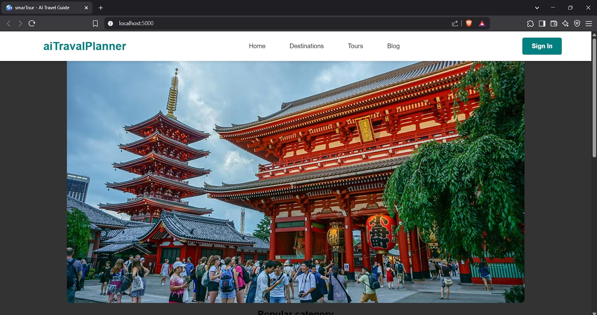

01⌘
Programming
Core languages I have worked with.
HELLO, WORLD. I'M
IT STUDENT · DEVELOPER · BUILDER
I’m an aspiring software developer from Nagpur, India. After completing a Diploma in Computer Engineering, I’m pursuing a B.Tech in Information Technology and learning by building practical projects. I’m interested in software development, AI/ML and cloud computing.
const developer = { name: "Parasram", degree: "B.Tech IT", interests: [ "Development", "AI / ML", "Cloud" ], mindset: "Always learning"};01 / THE PERSON BEHIND THE CODE
I believe the best way to learn technology is to build with it.
I'm Parasram Vilas Gaikwad, an Information Technology student with a Diploma in Computer Engineering. I’m interested in programming, data, artificial intelligence and cloud technologies. I enjoy learning new tools, experimenting with ideas and understanding how technology can solve real-world problems.
This portfolio is my digital workspace — a place to document what I learn, what I build and where I'm headed next.
02 / TOOLS IN MY WORKSPACE
Core languages I have worked with.
Building the structure and experience of the web.
Working with structured and document data.
Tools I use and areas I’m actively exploring.
↳ Skills are a work in progress. I’m focused on consistent practice and building real projects.
03 / EXPERIMENTS & BUILDS
A selection of learning builds and experiments. Open a project to see its context and tools.

A travel-planning project built with Python, HTML, CSS and JavaScript. It is designed to help users explore destinations and organize trip ideas in one place.
An e-commerce project focused on an online pizza-ordering experience. Python was used in the project; the application flow centers on browsing pizza options and ordering.
Arduino Uno experiments using sensors to explore motion detection and sensor-based responses. These projects helped build practical experience with hardware and embedded programming.
A responsive personal portfolio built with HTML, CSS and JavaScript, featuring an interactive terminal. The deployment work introduces me to hosting a static website with AWS Amplify.
04 / LEARNING BEYOND THE CLASSROOM
Connected with students to introduce AWS Builder Center and encourage them to explore cloud learning. Creating original AWS-themed social posts helped me communicate technical ideas, build confidence and strengthen my understanding of cloud computing. This is community and content experience; I am continuing to develop hands-on AWS service experience.
Completed an internship experience with Marvetech Technologies. Role, dates and specific contributions can be added here once confirmed.
Continuing my engineering journey, strengthening technical foundations and learning through coursework and practical projects.
05 / THE NEXT VERSION OF ME
A living roadmap for the developer I’m working to become. Select a stage to explore the next set of learning goals.
STAGE 01 / CURRENT FOUNDATION
Keep building confidence in programming, problem-solving, web development and core computer science concepts.
06 / INTERACTIVE FEATURE
A little terminal for curious visitors. Type help to explore my story, projects, interests and learning journey. Try funfact for a personal reveal.
Welcome to PARASRAM.OS.
Type help to see available commands.
07 / OPEN CHANNEL
I’m always interested in learning, collaborating and exploring new opportunities. Feel free to reach out.
PROJECT DETAILS